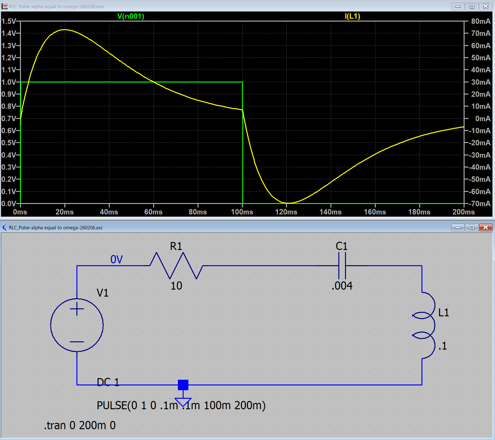
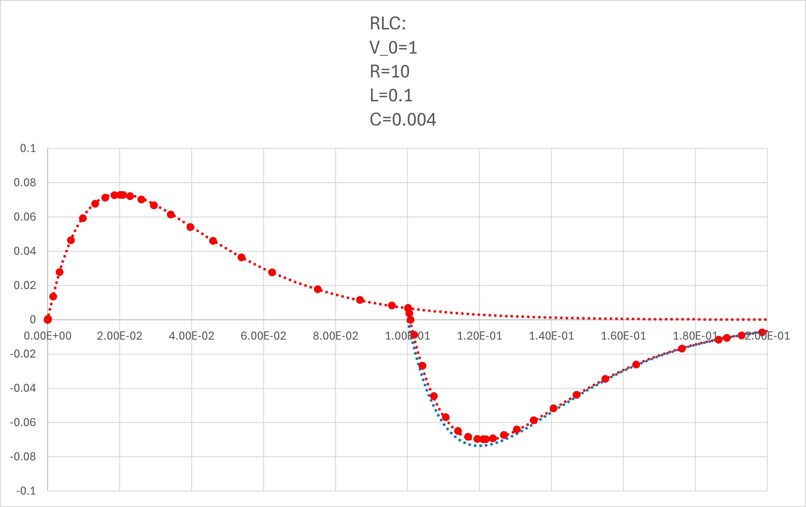

１５ー１ー１４．ステップ関数（RLC回路）
α=ω0
\(\Large \displaystyle I(t) = I_1(t) + I_2(t) \)
\(\Large \displaystyle = C_0 \ e^{- \alpha t} + (C_1 \ t + C_2)e^{- \alpha t} \)
\(\Large \displaystyle = (D_1 + D_2 \ t ) \ e^{- \alpha t} \)
となる．
I(0) =0, I'(0)=V0/L，とすると，
\(\Large \displaystyle I(0) = D_1 =0 \)
\(\Large \displaystyle I'(t) = D_2 \ e^{- \alpha t} - \alpha (D_1 + D_2 \ t ) \ e^{- \alpha t} \)
\(\Large \displaystyle = D_2 \ ( 1- \alpha \ t) e^{- \alpha t} \)
\(\Large \displaystyle I'(0) = D_2 = \frac{V_0}{L} \)
\(\Large \displaystyle I(t) = \frac{V_0}{L} \cdot \ t \cdot e^{- \alpha t} \)
\(\Large \displaystyle V_C = \frac{1}{C} \int_0^{t_0} I(t) \ dt \)
\(\Large \displaystyle = \frac{1}{C} \int_0^{t_0} \frac{V_0}{L} \cdot \ t \cdot e^{- \alpha t} \ dt \)
\(\Large \displaystyle = \frac{V_0}{LC} \int_0^{t_0} t \cdot e^{- \alpha t} \ dt \)
この積分は，部分積分から，
\(\Large \displaystyle (fg)' = f'g + fg' \)
\(\Large \displaystyle f'g = (fg)' - fg' \)
\(\Large \displaystyle \int f'g = fg - \int fg' \)
\(\Large \displaystyle f' = e^{- \alpha t}, \ f= - \frac{1}{\alpha} e^{- \alpha t} \)
\(\Large \displaystyle g = t, \ g' =1 \)
\(\Large \displaystyle \int_0^{t_0} t \cdot e^{- \alpha t} \ dt = \left[ t \cdot (- \frac{1}{\alpha} e^{- \alpha t})\right]_0^{t_0} - \int_0^{t_0} (- \frac{1}{\alpha} e^{- \alpha t} ) \ dt \)
\(\Large \displaystyle = - \frac{t_0}{\alpha} \cdot e^{- \alpha \ t_0} - \frac{1}{ \alpha^2} \left[ e^{- \alpha t} \right]_0^{t_0} \)
\(\Large \displaystyle = - \frac{t_0}{\alpha} \cdot e^{- \alpha \ t_0} - \frac{1}{ \alpha^2} \left[ e^{- \alpha t_0} -1 \right]_0^{t_0} \)
\(\Large \displaystyle = \frac{1}{\alpha^2} \left[ 1 - e^{- \alpha \ t_0 } ( 1 + \alpha t_0)\right] \)
となるので，
\(\Large \displaystyle V_C = \frac{V_0}{LC} \frac{1}{\alpha^2} \left[ 1 - e^{- \alpha \ t_0 } ( 1 + \alpha t_0)\right] \)
となり，t0における電流の微分値は，
\(\Large \displaystyle I'(t_0) = - \frac{ V_C + R \cdot I(t_0) }{L} \)
となる．
\(\Large \displaystyle I(t) = \frac{V_0}{L} \cdot \ t \cdot e^{- \alpha t} \)
\(\Large \displaystyle I(t_0) = \frac{V_0}{L} \cdot \ t \cdot e^{- \alpha t_0} \)
から，電流は，
\(\Large \displaystyle I(t) = (D_1 + D_2 \ t ) \ e^{- \alpha t} \)
\(\Large \displaystyle I'(t) = - \alpha \ (D_1 + D_2 \ t ) \ e^{- \alpha t} + D_2 \ e^{- \alpha t} \)
\(\Large \displaystyle I(t_0) = (D_1 + D_2 \ t_0 ) \ e^{- \alpha t_0} \)
\(\Large \displaystyle I'(t_0) = - \alpha \ (D_1 + D_2 \ t_0 ) \ e^{- \alpha t_0} + D_2 \ e^{- \alpha t_0} \)
\(\Large \displaystyle = - \alpha \ I( t_0) + D_2 \ e^{- \alpha t_0} \)
\(\Large \displaystyle D_2 = \{ I'(t_0) + \alpha \ I( t_0)\} \ e^{ \alpha t_0} \)
\(\Large \displaystyle D_1 = I(t_0) \ e^{ \alpha \ t_0} - D_2 \ t_0 = I(t_0) \ e^{ \alpha \ t_0} - \{ I'(t_0) + \alpha \ I( t_0)\} \ e^{ \alpha t_0} \ t_0 \)
\(\Large \displaystyle = e^{ \alpha \ t_0} \{ I(t_0) (1- \alpha \ t_0 ) - I'(t_0) \ t_0 \} \)
まとめると，
\(\Large \displaystyle \color{red}{I(t) = (D_1 + D_2 \ t ) \ e^{- \alpha t} }\)
\(\Large \displaystyle \color{red}{D_1 = e^{ \alpha \ t_0} \{ I(t_0) (1- \alpha \ t_0 ) - I'(t_0) \ t_0 \} }\)
\(\Large \displaystyle \color{red}{D_2 = \{ I'(t_0) + \alpha \ I( t_0)\} \ e^{ \alpha t_0} }\)
もしくは，
\(\Large \displaystyle \color{red}{I(t) = (D_1 + D_2 \ t ) \ e^{- \alpha (t-t_0)} }\)
\(\Large \displaystyle \color{red}{D_1 = \{ I(t_0) (1- \alpha \ t_0 ) - I'(t_0) \ t_0 \} }\)
\(\Large \displaystyle \color{red}{D_2 = \{ I'(t_0) + \alpha \ I( t_0)\} }\)
となります．
この式の結果は何を意味しているかというと，前ページと同じで，
第一項 ： 最初のステップオンの際の波形（たとえば，0→1）
第二項 ： t=t0，において，1→0，のように，逆のステップを入力した波形
なので，ステップオフ後，の波形は，
ステップオンの波形の残り ＋ マイナスのステップの波形 の和
となるわけです．
実際に，LTspice，でシミュレートしてみましょう．ここ，と同様に，
V0 : 1 V
R : 10 Ω
L : 0.01 H
C : 0.0004 F
とすると，
\(\Large \displaystyle \omega_0 = \frac{1}{\sqrt{0.01 \times 0.0004} } = 50 \ (1/s) \)
\(\Large \displaystyle \alpha \equiv \frac{10}{2 \times 0.01} = 50 \ (1/s) \)
となり，α = ω0，の条件となります．
\(\Large \displaystyle \omega = \sqrt{ \alpha^2 - \omega_0^2 } =0 (rad/s) \)
となり，LTspiceでシミュレートすると，

となります．式と当てはめてみると，

と一致することがわかります（全領域で）．
青点線，が右辺第二項，で右辺第一項との和が，シミュレーションと一致することがわかります．